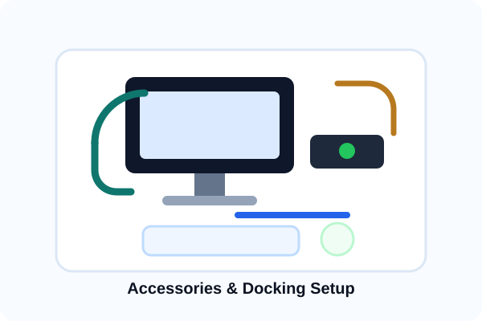

Peripherals & Accessories Selection
The right accessories make a huge difference in user productivity.
Good peripherals improve user comfort, productivity, and equipment longevity. We help select monitors, docking stations, keyboards, mice, webcams, headsets, and other business accessories that match your setup and budget. Quality equipment reduces fatigue and improves efficiency.
- Monitor selection and setup
- Docking stations for laptop users
- Keyboard and mouse options
- Webcams and conference equipment
- Headsets and audio equipment
- Cable management solutions
- Ergonomic setup guidance
- Budget-conscious recommendations
